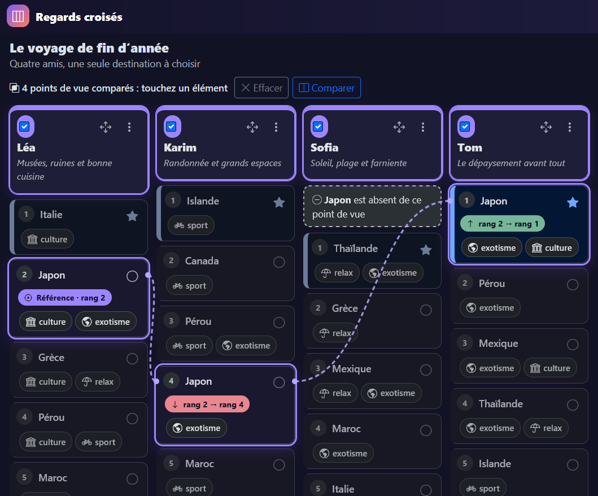
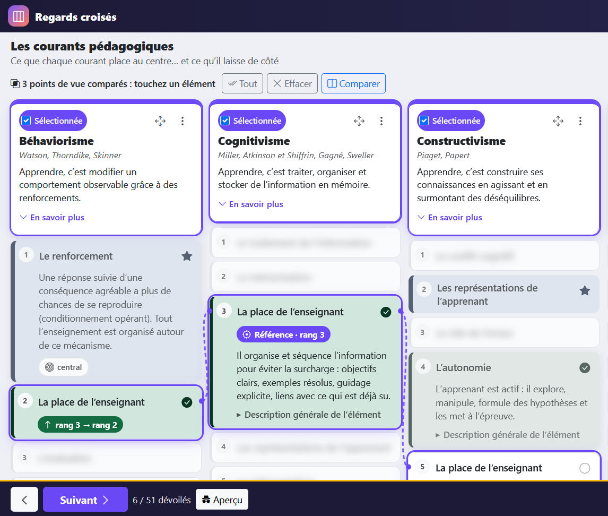

Regards croisés montre comment plusieurs points de vue hiérarchisent différemment un même ensemble d’éléments : courants de pensée, théories, acteurs, époques, cultures, ou simplement des personnes. Chaque point de vue est une colonne, ses éléments y sont classés du plus au moins important, et l’on compare.
Pas besoin d’apprendre la syntaxe : n’importe quelle IA (ChatGPT, Claude, Gemini, Mistral, Copilot…) peut transformer votre cours en grille. Donnez-lui l’adresse de la page d’instructions pour IA :
Lis les instructions sur docs/skill.md. Dis-moi si le cours suivant se prête à une grille « Regards croisés » et, si oui, produis le fichier. Public : étudiants de première année, 4 à 6 points de vue. [collez ici votre cours, votre plan ou vos notes]
L’IA commence par dire si l’outil est adapté (il ne l’est pas pour une chronologie, une procédure ou une simple opposition pour / contre), puis donne un bloc de Markdown. Copiez-le, et dans l’application choisissez Fichier › Coller du Markdown (ou faites simplement Ctrl+V sur la page) : un aperçu s’affiche, avec d’éventuels avertissements, avant de remplacer la grille.
Cette documentation est ouverte depuis votre ordinateur : une IA en ligne ne pourra pas lire cette adresse. Utilisez l’adresse publique https://edu-fpar.github.io/perspective-grid/docs/skill.md, ou le bouton ci-dessous, et collez le texte au début de votre message.
Pour un cours en anglais : version anglaise de la page. Les développeurs trouveront aussi deux skills pour Claude Code dans le dossier skills/ du dépôt (repérage des passages pertinents, puis mise au format avec validation automatique).
2. Démarrer
Ouvrez l’application. Un exemple est chargé au premier lancement ; le menu Exemples en propose trois : les courants pédagogiques, éthiques et IA, et le voyage de fin d’année (le plus simple pour découvrir l’outil).
Chargez votre grille : Fichier › Ouvrir un fichier .md, glissez le fichier sur la page, ou collez le Markdown produit par une IA.
Explorez : touchez un élément pour lire son détail, cochez Comparer sur deux colonnes, puis touchez un élément pour voir son rang ailleurs.
Tout reste dans votre navigateur : rien n’est envoyé à un serveur. Votre travail est enregistré automatiquement sur cet appareil ( Enregistré en haut à droite).
3. Lire une grille
Une colonne = un point de vue. Son en-tête (la carte du haut) donne son nom, un sous-titre (auteurs, époque, profil…), une phrase qui le résume et, avec En savoir plus, une description détaillée.
L’ordre des cartes est le rang : le petit numéro indique la place de l’élément pour ce point de vue. Le n° 1 est ce qui compte le plus pour lui.
Toucher une carte ouvre son détail : ce que l’élément signifie pour ce point de vue. Quand l’élément a aussi une description générale, elle est proposée en dessous.
Le même élément peut apparaître dans plusieurs colonnes, à des rangs différents ; il peut aussi manquer : c’est tout l’intérêt de la comparaison.
Une case vide sert seulement à aligner visuellement ; elle ne compte pas dans les rangs.
Les états (couleurs)
Chaque état combine une couleur, une icône et un style de bordure : il reste lisible sans les couleurs, et il est annoncé par les lecteurs d’écran.
État
Repère visuel
Sens habituel
Mis en avant
bordure épaisse
Idée-clé du point de vue
Valorisé
bordure pleine
Favorable, valorisé
Nuancé, discuté
bordure tiretée
Débattu, à nuancer
Rejeté, opposé
bordure double
Refusé, combattu
Secondaire, écarté
pointillés, texte barré
Laissé de côté
Les badges
Un badge qualifie la relation du point de vue à l’élément. Il s’affiche en pied de carte (sur téléphone, seule l’icône est visible : touchez-la pour lire le mot).
central · accepté · surévalué · sous-évalué · contesté · rejeté · ignoré · nié · instrumentalisé. Un fichier peut déclarer ses propres badges (par exemple culture, sport dans l’exemple du voyage).
4. Comparer des points de vue
Sélectionnez au moins deux colonnes : case Comparer de l’en-tête, ou toucher l’en-tête. Le bouton Tout les sélectionne toutes, Effacer vide la sélection.
Touchez un élément : il devient la référence. Dans les autres colonnes sélectionnées, le même élément est encadré, avec son écart de rang : ↑ rang 2 → rang 1 (plus important ici), ↓ rang 2 → rang 4 (moins important), même rang.
Absent ? Un cadre en pointillés en haut de la colonne l’indique : « Japon est absent de ce point de vue ».
Sur ordinateur, des lignes de liaison relient les cartes du même élément (désactivables dans les réglages).

Le Japon pris comme référence chez Léa (rang 2) : 4e chez Karim, 1er chez Tom, absent chez Sofia (thème sombre).
Vue « Comparer » (téléphone)
Avec deux colonnes sélectionnées, le bouton Comparer n’affiche qu’elles, côte à côte, en version compacte (titres seuls) : idéal sur un téléphone.
Rapprocher deux colonnes
Pour comparer deux colonnes éloignées, déplacez-en une : flèches de l’en-tête, poignée à glisser sur ordinateur, ou Alt+←/→. Ce nouvel ordre est enregistré dans la grille.
5. Présenter sans surcharger
Une grille complète affichée d’un coup est riche… et peut décourager. Le menu Présenter propose des modes qui guident le regard. Ils ne modifient jamais le fichier et se mettent en pause pendant l’édition.
À la une
Une seule colonne est active (bordure dorée), les autres sont grisées ; toucher une colonne grisée la met à la une. Dans la colonne active, l’élément ouvert ressort et les autres s’estompent.
Progressif
Les cartes restent floues, sans couleur d’état (elle trahirait la réponse), jusqu’à ce qu’on les touche.
À partir de zéro
Seuls le premier en-tête et la forme des cartes sont visibles ; on fait apparaître les contenus un par un.
« À la une » se combine avec les deux modes de dévoilement. Le bouton Suivant de la barre du bas dévoile la suite dans l’ordre choisi :
Colonne par colonne : l’en-tête, puis les éléments du n° 1 au dernier ; la colonne active suit.
Rang par rang : tous les n° 1, puis tous les n° 2…
Élément par élément : un même élément apparaît d’un coup dans toutes les colonnes. Avec « À la une », cette « ligne » est mise en valeur : on voit par exemple « La place de l’enseignant » s’allumer au rang 3, 5, 2, 3…

Dévoilement progressif et comparaison : les cartes pas encore dévoilées restent floues ; la barre du bas affiche « Suivant » et la progression.
La barre de présentation
revient en arrière, Suivant dévoile la suite, le compteur indique la progression (« 12 / 56 dévoilés »).
Aperçu affiche discrètement l’étape suivante. À n’activer que si cet écran n’est pas projeté.
recommence, dévoile tout, quitte la présentation.
Une télécommande de présentation fonctionne directement (touches Page suivante / Page précédente), de même que N / P.
La fenêtre présentateur
ouvre une seconde fenêtre, à garder sur l’écran de l’ordinateur pendant que la grille est projetée (écran étendu). Elle montre ce qui va être dévoilé avec ses notes (détail, état, badges), ce qui vient de l’être, le déroulé complet (touchez une étape pour y aller directement) et une vue d’ensemble où ce qui est encore masqué est grisé. Ses boutons pilotent la projection. Les deux fenêtres doivent être ouvertes dans le même navigateur ; si la fenêtre ne s’ouvre pas, autorisez les fenêtres surgissantes pour ce site.
6. Annoter en direct
Même en consultation, le formateur peut annoter la grille devant le groupe :
Changer l’état : petit bouton rond à droite de chaque carte (menu de 6 états), ou touches 1 à 6 sur la carte sélectionnée.
Ajouter un badge : par le même menu (partie Badges), ou avec le tiroir de badges : sur ordinateur, glissez un badge sur une carte ; sur téléphone, touchez un badge puis les cartes à annoter, et Terminer.
Ces annotations modifient la grille (elles sont enregistrées et exportées). Pour revenir en arrière : Ctrl+Z, ou l’historique des versions.
7. Modifier une grille
Le bouton Éditer (ou la touche E) active le mode édition, pensé pour l’ordinateur mais utilisable sur téléphone. Une barre jaune le signale ; Terminer en sort.
Modifier un texte : double-clic sur un titre, un sous-titre ou une description courte ; Entrée valide, Échap annule.
Réordonner : glissez la poignée d’une carte (appui long sur téléphone), ou Alt+↑/↓.
Ajouter un élément : bouton entre deux cartes (l’élément est inséré à cette place) ou en bas de colonne.
Formulaire complet : crayon d’une carte, ou F2. On y règle le titre, la clé, l’état, les badges et le détail.
Colonnes : Modifier le point de vue dans l’en-tête ; le menu permet aussi d’ajouter une case vide, de dupliquer ou de supprimer la colonne ; Ajouter un point de vue dans la barre jaune.
Titre et présentation : titre, sous-titre, texte « À propos », auteur, source et largeur des colonnes (étroites pour des cartes d’un seul mot ou nom, deux colonnes par écran de téléphone).
Annuler / rétablir : Ctrl+Z / Ctrl+Y, ou les flèches de la barre jaune.
La clé, c’est ce qui relie les colonnes. Deux cartes qui ont la même clé sont « le même élément » vu par deux points de vue : c’est elle qui permet la comparaison. Dans le formulaire, le champ Clé propose les clés existantes et indique dans quelles colonnes l’élément apparaît déjà. Laissez le titre vide pour reprendre le titre commun, ou écrivez un titre propre à ce point de vue.
Pour les modifications en masse, Fichier › Voir / modifier le Markdown ouvre la source complète, avec aperçu avant d’appliquer.
8. Charger, enregistrer, versions
Charger
Quatre façons : Fichier › Ouvrir un fichier .md ; glisser un fichier sur la page ; coller du Markdown (Fichier › Coller du Markdown, ou Ctrl+V sur la page) ; Fichier › Ouvrir depuis une adresse. Dans tous les cas, un aperçu montre la grille miniature, ses chiffres et les avertissements de lecture (clé manquante, état inconnu…) avant de remplacer la grille actuelle. Le fichier n’a pas besoin d’être parfait : l’application corrige ce qu’elle peut et explique ce qu’elle a fait.
Enregistrement et historique
La grille est enregistrée automatiquement dans le navigateur. Fichier › Créer une version (Ctrl+S) garde une copie nommée ; une sauvegarde automatique est aussi faite avant chaque remplacement (import, exemple, restauration). Fichier › Historique des versions permet de restaurer, renommer, télécharger ou supprimer une version.
Le stockage du navigateur est propre à cet appareil et à ce navigateur, et peut être effacé (navigation privée, nettoyage). Exportez régulièrement vos grilles en fichiers .md.
Exporter
Fichier › Exporter en Markdown crée un nouveau fichier : la version est incrémentée, la version d’origine est notée (« basée sur ») avec la date, et le nom se termine par -v2.md, -v3.md… L’original n’est jamais écrasé. On peut aussi copier le Markdown dans le presse-papiers.
9. Partager
Fichier › Lien de partage propose deux sortes de liens :
Lien autonome : toute la grille est compressée dans le lien ; rien n’est envoyé à un serveur. Pratique pour un message ou un QR code, tant que la grille reste courte.
Lien vers un fichier en ligne : déposez le .md sur un site public (GitHub, ENT, site de l’établissement) et collez son adresse ; le lien affichera toujours la dernière version du fichier.
Deux cases permettent d’ouvrir le lien avec les colonnes déjà sélectionnées et dans le mode de présentation en cours (par exemple « à partir de zéro »).
Paramètres d’adresse
?src=https://…/grille.md
Charge un fichier en ligne (le site doit autoriser la lecture, comme GitHub et son lien « Raw »).
Présélectionne des colonnes ; &compact=1 ouvre la vue « Comparer ».
&spot=1
Mode « À la une ».
&stage=veil / zero
Dévoilement progressif / à partir de zéro ; &order=column, rank ou element pour l’ordre.
10. Le format de fichier
Une grille est un simple fichier texte Markdown, lisible par un humain et facile à produire par une IA :
---
format: perspective-grid/v1
title: Le voyage de fin d’année
lang: fr
version: 1
based_on: null
updated: 2026-11-11
---
# Elements
## [japon] Japon
# Perspectives
## Léa {#lea}
subtitle: Musées, ruines et bonne cuisine
### [italie] Italie
state: primary
badges: culture
### [japon]
Ce que le Japon représente pour Léa (facultatif).
L’en-tête (entre les deux ---) donne le titre, la langue, la version.
# Elements liste les éléments communs : ## [clé] Titre.
# Perspectives liste les colonnes : ## Titre {#identifiant}, puis les cartes ### [clé]dans l’ordre des rangs, avec éventuellement state:, badges: et un détail.
Spécification complète (en anglais) : FORMAT.md. Page pour les IA : skill.md.
11. Affichage, clavier, accessibilité
Le menu Réglages propose : thème jour / nuit (automatique par défaut, selon le système), motifs renforcés (hachures différentes par état, en plus des couleurs), lignes de liaison, numéros de rang, langue de l’interface (français, anglais).
Touche
Action
↑↓←→
Se déplacer entre les cartes (vers le même élément dans la colonne voisine)
Entrée / Espace
Ouvrir le détail et comparer
1 … 6
Changer l’état de la carte
M
Menu état et badges
Échap
Arrêter la comparaison, fermer un menu
Alt+←/→
Déplacer la colonne
E
Mode édition
Alt+↑/↓, F2, Suppr
Édition : monter / descendre, modifier, supprimer la carte
Ctrl+Z / Ctrl+Y, Ctrl+S
Annuler / rétablir, créer une version
Page suiv. / Page préc.
Présentation : dévoiler la suite / revenir
?
Aide des raccourcis
Pour les lecteurs d’écran : chaque colonne est une liste numérotée (le rang est annoncé), les états et badges sont lus avec le titre, les changements (comparaison, état, dévoilement) sont annoncés. Les animations sont désactivées si le système le demande (réduction des animations).
Documentation
Perspective Grid (Regards croisés) shows how several perspectives rank the same set of elements differently: schools of thought, theories, stakeholders, periods, cultures, or simply people. Each perspective is a column, its elements are ranked from most to least important, and you compare.
No need to learn the syntax: any AI (ChatGPT, Claude, Gemini, Mistral, Copilot…) can turn your course into a grid. Give it the address of the instructions page for AIs:
Read the instructions at docs/skill-en.md. Tell me whether the following course suits a perspective grid and, if so, produce the file. Audience: first-year students, 4 to 6 perspectives. [paste your course, outline or notes here]
The AI first says whether the tool fits (it does not for a timeline, a procedure or a simple pros / cons opposition), then gives a Markdown block. Copy it and, in the app, choose File › Paste Markdown (or simply press Ctrl+V on the page): a preview appears, with any warnings, before the grid is replaced.
This documentation is opened from your computer: an online AI cannot read this address. Use the public address https://edu-fpar.github.io/perspective-grid/docs/skill-en.md, or the button below, and paste the text at the start of your message.
For a course in French: French version of the page. Developers will also find two Claude Code skills in the repository’s skills/ folder (finding relevant passages, then formatting with automatic validation).
2. Getting started
Open the app. An example is loaded the first time; the Examples menu offers three: learning theories, ethics and AI, and the end-of-year trip (the simplest one to discover the tool). The examples are in French.
Load your grid: File › Open a .md file, drop the file on the page, or paste the Markdown produced by an AI.
Explore: tap an element to read its detail, tick Compare on two columns, then tap an element to see its rank elsewhere.
Everything stays in your browser: nothing is sent to a server. Your work is saved automatically on this device ( Saved, top right).
3. Reading a grid
One column = one perspective. Its header (the top card) gives its name, a subtitle (authors, period, profile…), a one-sentence summary and, with Read more, a detailed description.
The order of the cards is the rank: the small number shows the element’s place for that perspective. Number 1 is what matters most to it.
Tapping a card opens its detail: what the element means for this perspective. When the element also has a general description, it is offered below.
The same element can appear in several columns at different ranks; it can also be missing: that is the whole point of comparing.
An empty slot is only for visual alignment; it does not count in ranks.
States (colours)
Each state combines a colour, an icon and a border style: it stays readable without colours, and screen readers announce it.
State
Visual cue
Usual meaning
Highlighted
thick border
Key idea of the perspective
Valued
solid border
Favourable, valued
Nuanced, debated
dashed border
Debated, to be qualified
Rejected, opposed
double border
Refused, opposed
Secondary, set aside
dotted, struck-through text
Left aside
Badges
A badge qualifies the relation of the perspective to the element. It appears at the foot of the card (on a phone, only the icon shows: tap it to read the word).
central · accepted · overvalued · undervalued · contested · rejected · ignored · denied · instrumentalized. A file can declare its own badges (for instance culture, sport in the trip example).
4. Comparing perspectives
Select at least two columns: the Compare box in the header, or tap the header. All selects every column, Clear empties the selection.
Tap an element: it becomes the reference. In the other selected columns, the same element is outlined with its rank gap: ↑ rank 2 → rank 1 (more important here), ↓ rank 2 → rank 4 (less important), same rank.
Absent? A dotted box at the top of the column says so: “Japan is absent from this perspective”.
On a computer, link lines connect the cards of the same element (can be turned off in the settings).
Japan taken as the reference for Léa (rank 2): 4th for Karim, 1st for Tom, absent for Sofia (dark theme, French interface).
“Compare” view (phone)
With two columns selected, the Compare button shows only them, side by side, in a compact version (titles only): ideal on a phone.
Bringing two columns together
To compare two distant columns, move one: the arrows in the header, the handle to drag on a computer, or Alt+←/→. The new order is saved in the grid.
5. Presenting without overload
A complete grid shown all at once is rich… and can be off-putting. The Present menu offers modes that guide the eye. They never change the file and pause while editing.
Spotlight
A single column is active (golden border), the others are greyed out; tapping a greyed column puts it in the spotlight. In the active column, the open element stands out and the others fade.
Progressive
Cards stay blurred, without their state colour (it would give the answer away), until they are tapped.
From scratch
Only the first header and the card shapes are visible; contents appear one by one.
“Spotlight” combines with both reveal modes. The Next button in the bottom bar reveals what comes next, in the chosen order:
Column by column: the header, then the elements from #1 to the last; the active column follows.
Rank by rank: all #1, then all #2…
Element by element: one element appears at once in every column. With “Spotlight”, this “row” is highlighted: you see, for instance, “The teacher’s role” light up at rank 3, 5, 2, 3…
Progressive reveal and comparison: cards not yet revealed stay blurred; the bottom bar shows “Next” and the progress (French interface).
The presentation bar
goes back, Next reveals what follows, the counter shows the progress (“12 / 56 revealed”).
Peek discreetly shows the next step. Only turn it on if this screen is not projected.
starts again, reveals everything, leaves the presentation.
A presentation clicker works straight away (Page Down / Page Up keys), as do N / P.
The presenter window
opens a second window, to keep on the laptop screen while the grid is projected (extended display). It shows what is about to be revealed with its notes (detail, state, badges), what was just revealed, the full run sheet (tap a step to jump to it) and an overview where what is still hidden is greyed out. Its buttons drive the projection. Both windows must be open in the same browser; if the window does not open, allow pop-ups for this site.
6. Annotating live
Even in view mode, the trainer can annotate the grid in front of the group:
Change the state: the small round button on the right of each card (a menu of 6 states), or keys 1 to 6 on the selected card.
Add a badge: through the same menu (Badges part), or with the badge drawer: on a computer, drag a badge onto a card; on a phone, tap a badge then the cards to annotate, and Done.
These annotations change the grid (they are saved and exported). To go back: Ctrl+Z, or the version history.
7. Editing a grid
The Edit button (or the E key) turns on edit mode, designed for computers but usable on phones. A yellow bar shows it; Done leaves it.
Edit a text: double-click a title, subtitle or short description; Enter confirms, Esc cancels.
Reorder: drag a card’s handle (long press on a phone), or Alt+↑/↓.
Add an element: the button between two cards (inserted at that place) or at the bottom of a column.
Full form: a card’s pencil, or F2. It sets the title, the key, the state, the badges and the detail.
Columns: Edit the perspective in the header; the menu also adds an empty slot, duplicates or deletes the column; Add a perspective in the yellow bar.
Title and introduction: title, subtitle, “About” text, author, source and column width (narrow for cards holding a single word or name, two columns per phone screen).
Undo / redo: Ctrl+Z / Ctrl+Y, or the arrows in the yellow bar.
The key is what links the columns. Two cards with the same key are “the same element” seen by two perspectives: that is what makes comparison possible. In the form, the Key field suggests existing keys and shows in which columns the element already appears. Leave the title empty to reuse the shared title, or write a title specific to this perspective.
For bulk changes, File › View / edit the Markdown opens the full source, with a preview before applying.
8. Loading, saving, versions
Loading
Four ways: File › Open a .md file; drop a file on the page; paste Markdown (File › Paste Markdown, or Ctrl+V on the page); File › Open from an address. In every case, a preview shows a miniature of the grid, its figures and the reading warnings (missing key, unknown state…) before the current grid is replaced. The file does not need to be perfect: the app fixes what it can and explains what it did.
Saving and history
The grid is saved automatically in the browser. File › Save a version (Ctrl+S) keeps a named copy; an automatic backup is also made before every replacement (import, example, restore). File › Version history lets you restore, rename, download or delete a version.
Browser storage belongs to this device and this browser, and can be erased (private browsing, clean-up). Export your grids regularly as .md files.
Exporting
File › Export as Markdown creates a new file: the version is incremented, the original version is recorded (“based on”) with the date, and the name ends with -v2.md, -v3.md… The original is never overwritten. You can also copy the Markdown to the clipboard.
9. Sharing
File › Share link offers two kinds of links:
Self-contained link: the whole grid is compressed into the link; nothing is sent to a server. Handy for a message or a QR code, as long as the grid stays short.
Link to an online file: put the .md on a public site (GitHub, LMS, school website) and paste its address; the link will always show the latest version of the file.
Two boxes let the link open with the columns already selected and in the current presentation mode (for instance “from scratch”).
Address parameters
?src=https://…/grid.md
Loads an online file (the site must allow reading, like GitHub and its “Raw” link).
Preselects columns; &compact=1 opens the “Compare” view.
&spot=1
“Spotlight” mode.
&stage=veil / zero
Progressive reveal / from scratch; &order=column, rank or element for the order.
10. The file format
A grid is a plain Markdown text file, readable by humans and easy for an AI to produce:
---
format: perspective-grid/v1
title: The end-of-year trip
lang: en
version: 1
based_on: null
updated: 2026-11-11
---
# Elements
## [japan] Japan
# Perspectives
## Lea {#lea}
subtitle: Museums, ruins and good food
### [italy] Italy
state: primary
badges: culture
### [japan]
What Japan means to Lea (optional).
The front matter (between the two ---) gives the title, language and version.
# Elements lists the shared elements: ## [key] Title.
# Perspectives lists the columns: ## Title {#identifier}, then the cards ### [key]in rank order, optionally with state:, badges: and a detail.
The Settings menu offers: light / dark theme (automatic by default, following the system), reinforced patterns (different hatching per state, on top of colours), link lines, rank numbers, interface language (French, English).
Key
Action
↑↓←→
Move between cards (to the same element in the next column)
Enter / Space
Open the detail and compare
1 … 6
Change the card’s state
M
State and badges menu
Esc
Stop comparing, close a menu
Alt+←/→
Move the column
E
Edit mode
Alt+↑/↓, F2, Del
Editing: move up / down, edit, delete the card
Ctrl+Z / Ctrl+Y, Ctrl+S
Undo / redo, save a version
Page Down / Page Up
Presentation: reveal next / go back
?
Shortcut help
For screen readers: each column is a numbered list (the rank is announced), states and badges are read with the title, and changes (comparison, state, reveal) are announced. Animations are turned off when the system asks for reduced motion.